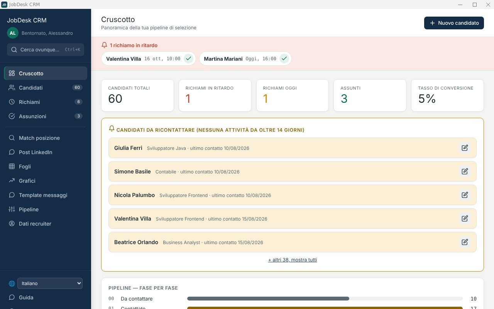
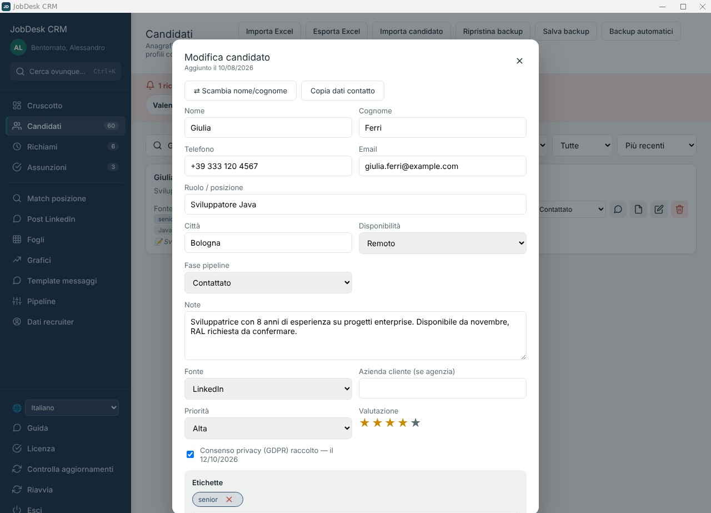
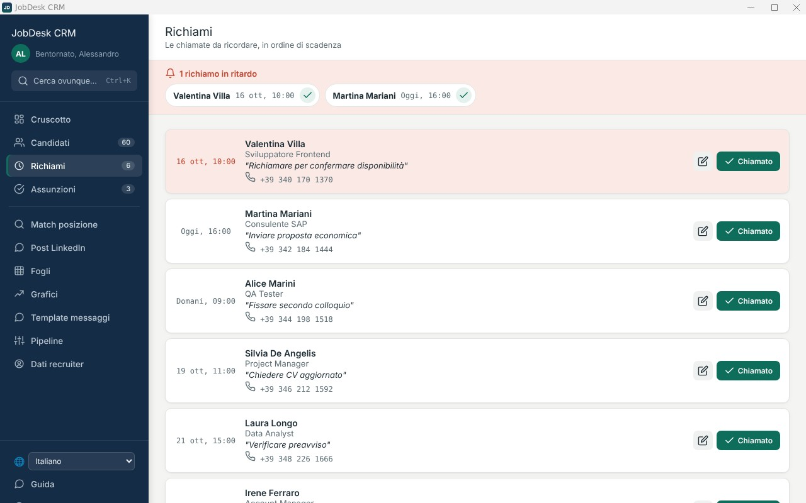
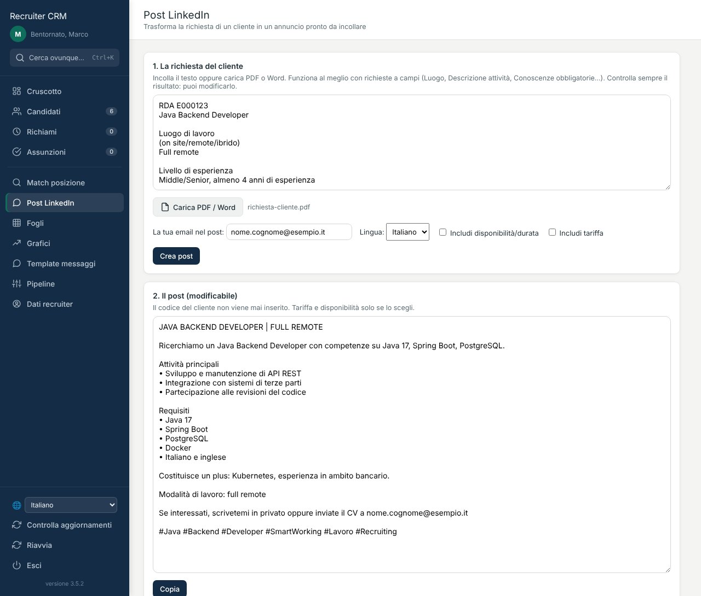

⌕
Trova candidati
Incolla l’annuncio: il programma prepara le ricerche, legge i profili LinkedIn che copi e mostra quali competenze hanno. Nota d’invito e messaggio già scritti. 21 Paesi o tutto il mondo.
JobDesk CRM è un software ATS e CRM per recruiter che permette di gestire candidati, pipeline di selezione, CV, note, richiami, attività e template in un'unica applicazione Windows.

Dalla prima candidatura al colloquio, fino all'assunzione: organizza il tuo lavoro senza dipendere da un abbonamento mensile e senza tenere tutto sparso tra fogli, email e appunti.
Un software per recruiting progettato per gestire candidati, selezione del personale, pipeline, attività e organizzazione del lavoro quotidiano dei recruiter.
Incolla l’annuncio: il programma prepara le ricerche, legge i profili LinkedIn che copi e mostra quali competenze hanno. Nota d’invito e messaggio già scritti. 21 Paesi o tutto il mondo.
Scrivi al candidato in un clic, con un messaggio da modello o scritto a mano. Numeri di tutto il mondo, nel browser o nell’app di WhatsApp.
Un solo box per ritrovare candidati, fogli e modelli da qualsiasi pagina del programma.
Anagrafica completa, fasi personalizzabili, vista Lista o Kanban, etichette, valutazione e storico attività.
Organizza le chiamate da fare e ricevi una notifica di Windows quando arriva il momento.
Carica un CV PDF o Word e il programma compila da solo la scheda. Poi incolla una posizione — o carica un Excel con più posizioni — e trova tra i tuoi candidati i più adatti, in locale sul tuo PC.
Incolla la richiesta di un cliente o carica il PDF o il Word: il programma la trasforma in un annuncio da incollare su LinkedIn, con titolo, attività, requisiti e il tuo contatto. Il codice cliente e la tariffa restano fuori, e puoi modificare il testo prima di copiarlo.
Crea fogli personalizzati, usa tipi di dato, convalida, ridimensionamento e copia/incolla con Excel.
Visualizza candidati per fase, assunzioni per mese e distribuzione per fonte direttamente dai tuoi dati.
Modelli per LinkedIn ed email e generatore di inviti a colloquio con link Teams, Zoom o Meet cliccabile.
Il programma conserva automaticamente le ultime 30 copie di sicurezza, oltre al backup manuale.
Quando arriva una nuova versione, JobDesk CRM la segnala e propone di scaricarla e installarla.
La versione 3.6 aggiunge la ricerca dei profili, i messaggi WhatsApp e la ricerca globale.

Il programma legge la posizione, prepara le ricerche su Google e Bing e, quando incolli i risultati, ti mostra quali profili LinkedIn hanno davvero le competenze richieste. Nota d’invito e messaggio sono già scritti: li copi e li invii tu.
Un’icona accanto a ogni candidato apre la chat con il messaggio già pronto, da un modello o scritto a mano. Funziona con numeri di tutto il mondo, nel browser o nell’app di WhatsApp.


Un solo box per cercare candidati, fogli e modelli da qualsiasi pagina del programma. Un clic e apri la scheda giusta.

Gestisci i candidati in ogni fase della selezione: contatti, ruolo cercato, disponibilità, pipeline, fonte, cliente, note, CV e consenso privacy.
Richiami, fogli di lavoro, messaggi e grafici sono integrati nello stesso ambiente, così puoi passare da un'attività all'altra senza cambiare strumento.
Vedi JobDesk CRM in azione →

Incolla il testo o carica il PDF o il Word della richiesta: il programma prepara un annuncio con titolo, attività, requisiti, modalità di lavoro e il tuo contatto. Lo rileggi, lo ritocchi e lo copi su LinkedIn.
Apri la funzione che ti interessa. Con screenshot e passaggi trovi tutto nel manuale.
Leggi il manuale completo →
Nome, telefono, email, città, ruolo e disponibilità (in sede, ibrido, da remoto). In più fase della pipeline, fonte, azienda cliente se lavori per terzi, valutazione a stelle e tag colorati.
Le fasi le decidi tu: le aggiungi, le rinomini, le riordini o le elimini. I candidati si vedono in elenco o in Kanban e si trascinano da una fase all’altra.
Carichi un CV in PDF o Word e il programma riconosce nome, cognome, telefono, email, città, ruolo e competenze, e riempie i campi vuoti. Quelli già compilati non si toccano. Controlla sempre i dati prima di salvare.
Se dal CV nome e cognome escono invertiti, un clic li scambia. “Copia dati di contatto” mette negli appunti nome, città, telefono ed email, pronti da incollare.
Puoi allegare una seconda versione del CV, senza i dati personali, da usare quando presenti il candidato al cliente.
Note libere e uno storico con data per ogni chiamata o aggiornamento. Registri il consenso GDPR e il programma ti ricorda quando manca.
“Esporta candidato” salva tutta la scheda, CV compresi, in un file. Un collega che usa lo stesso programma la carica con “Importa candidato”.
Importi ed esporti in Excel, anche solo i candidati che scegli. I candidati cancellati restano recuperabili per 30 giorni.
Incolli la posizione (o carichi PDF o Word) e il programma ricava ruolo, competenze e anni di esperienza. Poi prepara le ricerche su Google e Bing, per città e combinazioni di competenze. Le lanci tu nel tuo browser.
Copi la pagina dei risultati (Ctrl+A, Ctrl+C) e premi “Incolla e leggi”: compaiono schede con nome, ruolo, azienda, città e le competenze trovate, con un punteggio. I nuovi profili si aggiungono senza doppioni.
Cerchi in 21 Paesi o in tutto il mondo. Il programma cambia da solo il sottodominio di LinkedIn. I messaggi sono in italiano per l’Italia e in inglese per gli altri Paesi, ma puoi cambiare lingua quando vuoi.
Per ogni profilo il programma prepara la nota da allegare alla richiesta di collegamento (entro i 300 caratteri di LinkedIn) e il messaggio dopo l’accettazione. Li copi e li invii tu: il programma non invia nulla da solo.
Un’icona accanto a ogni candidato apre la chat con il messaggio già scritto, nel browser o nell’app. Con + o 00 il numero è usato com’è, altrimenti si usa il prefisso che imposti. “Segna come inviato” scrive la nota nello storico.
Modelli per LinkedIn e email che si compilano con i tuoi dati. Per il colloquio inserisci data, ora e link (Teams, Zoom, Meet): il link resta cliccabile in Outlook e Gmail.
Incolli la richiesta di un cliente (o carichi il PDF o il Word) e ottieni un annuncio da incollare su LinkedIn, con titolo, attività, requisiti e il tuo contatto. Codice cliente e tariffa restano fuori.
Da qualsiasi pagina cerchi candidati, fogli e modelli. Un clic sul risultato apre la scheda giusta.
Incolli l’annuncio e il programma estrae i requisiti, che puoi togliere, aggiungere o rendere obbligatori. Ottieni una classifica con percentuale, requisiti trovati e requisiti mancanti.
Carichi un foglio con una riga per posizione e confronti i candidati con tutte insieme. Per ogni posizione vedi i 10 migliori; per ogni candidato vedi le posizioni a cui può adattarsi. Il risultato si salva in Excel.
Il match non usa intelligenza artificiale online e non modifica i dati dei candidati. Legge i CV la prima volta e poi li ricorda, così i confronti successivi sono rapidi.
La percentuale è un aiuto per decidere da dove partire, non un giudizio. Una competenza citata più volte pesa più di una citata una volta. Gli anni di esperienza richiesti sono mostrati ma da verificare a mano.
Candidati totali, richiami scaduti o di oggi, assunzioni e tasso di conversione. Un avviso segnala chi non senti da più di 14 giorni.
L’elenco delle chiamate da fare in ordine di scadenza, con una notifica di Windows quando arriva il momento.
Lo storico delle posizioni chiuse con successo, e grafici per fase, per mese e per fonte generati dai tuoi dati.
Crei fogli con colonne di testo, numero, data o elenco a scelta con convalida. Colori condizionali, righe e colonne ridimensionabili e copia-incolla con Excel in entrambe le direzioni.
Barra dei fogli recenti, elenco completo con ricerca, eliminazione di più fogli insieme con copia di sicurezza automatica prima di cancellare.
Candidati, fogli e impostazioni stanno in una cartella separata dal programma. Aggiornare o disinstallare non la tocca. Internet serve solo per attivare la licenza.
Copie di sicurezza automatiche (al massimo una ogni 6 ore, tenendo le ultime 30), sempre disponibili dal pulsante “Backup automatici”. Puoi anche salvare o ripristinare un backup a mano.
Se il PC si spegne all’improvviso nessun file resta scritto a metà. Se un file si rovina, il programma ripristina l’ultimo backup valido.
Quando esce una nuova versione il programma te lo dice e propone di installarla, senza toccare i dati che hai già inserito.
Prova gratuita di 14 giorni dal primo avvio. Poi il programma chiede la chiave di licenza, valida per un PC. La prova si può scaricare e usare anche su altri computer.
Cambi lingua in qualsiasi momento, senza riavviare: menu, schede, messaggi, fasi e fonti predefinite sono tradotti.
Una panoramica veloce delle principali funzioni di JobDesk CRM.
Consulta il manuale d'uso per scoprire tutte le funzioni del programma, dall'installazione alla gestione dei candidati, fino a backup e aggiornamenti.
Leggi il manualeCandidati, fogli e impostazioni vivono in una cartella separata sul computer. Disinstallare o aggiornare il programma non la tocca. JobDesk CRM conserva inoltre automaticamente le ultime 30 copie di sicurezza.
Scarica gratuitamente JobDesk CRM e installalo sul tuo PC Windows.
Hai 14 giorni per vedere se fa al caso tuo.
Se ti trovi bene, puoi acquistare la licenza lifetime per 79 € una tantum.
Ricevi via email la chiave di licenza e la inserisci nel programma per attivarlo.
Provali qui sulla pagina. Non salviamo nulla: i dati restano nel tuo browser.
È lo stesso testo che il programma prepara in Trova candidati. LinkedIn accetta al massimo 300 caratteri.
Nel programma il testo si compila da solo con i dati del candidato e i tuoi.
Inserisci quanto paghi oggi e per quanto tempo lo userai. È solo aritmetica: i numeri li scegli tu.
JobDesk CRM costa 79 € una tantum. Il confronto non tiene conto delle altre funzioni dei programmi che usi oggi.
Guide, modelli e un piccolo gioco: non serve registrarsi.
Il programma vero con dati di esempio, senza installare nulla.
Scarica un foglio pronto per tracciare i candidati e leggi la guida.
Il metodo in 7 passi per non perdere più nessun profilo.
Fasi, esempio e metriche da seguire.
Modelli da copiare: collegamento, follow-up, rifiuto, referral.
60 secondi per assumere i candidati giusti. Quanti punti fai?
| CRM in abbonamento (tipico) | JobDesk CRM | |
|---|---|---|
| Costo | Canone mensile o annuale, spesso per utente | 79 € una volta sola |
| I tuoi dati | Sui server del fornitore | Sul tuo PC |
| Internet | Sempre necessario | Solo per attivare la licenza |
| Se smetti di pagare | Perdi l’accesso | Il programma resta tuo |
La versione di prova è gratuita per 14 giorni.
Scarica JobDesk CRM →Windows o il browser possono mostrare un avviso («non viene scaricato di frequente»): succede con i programmi nuovi. Scegli Mantieni, poi Ulteriori informazioni e Esegui comunque.
Pagamento una tantum. Nessun abbonamento.
Scarica la prova gratuita e guarda se può diventare il tuo strumento quotidiano.
Ciao, sono Alessandro. Faccio il recruiter e ho costruito JobDesk CRM perché volevo uno strumento semplice, mio, senza abbonamenti e con i dati sul mio computer. Lo uso ogni giorno e lo miglioro in base a quello che serve davvero a chi cerca candidati.
Scrivimi, rispondo io →Scegli un argomento, scrivi il messaggio e si apre la tua email già pronta. Nessun dato passa da questa pagina.
Ogni licenza è per un solo PC. La prova gratuita di 14 giorni invece puoi scaricarla e usarla anche su altri computer, così puoi verificare che vada bene dove ti serve prima di acquistare.
14 giorni dal primo avvio, poi il programma chiede la licenza per continuare.
Sì. Il messaggio («non viene scaricato di frequente» in Edge, «Windows ha protetto il PC» all'apertura) compare per i programmi nuovi o poco diffusi e non indica un problema nel file. Nel browser scegli Mantieni (in Edge: i tre puntini accanto al file, poi Mantieni e Mantieni comunque). Quando si apre la schermata blu di Windows, clicca Ulteriori informazioni e poi Esegui comunque. Il programma funziona sul tuo computer e i dati restano in locale.
No. La licenza completa costa 79 € una tantum ed è lifetime.
JobDesk CRM è pensato per lavorare offline e i dati restano sul PC. Serve una connessione solo per attivare la licenza la prima volta.
La versione attuale è pensata per Windows.
Sì, JobDesk CRM è disponibile in italiano e in inglese. Puoi cambiare lingua in qualsiasi momento dal menu del programma, senza reinstallare nulla.
Gli aggiornamenti non toccano la cartella separata in cui sono conservati dati e impostazioni.
Dopo l'acquisto ricevi via email la chiave di licenza: la incolli nel programma al primo avvio per attivarlo.
Prima di acquistare hai 14 giorni di prova gratuita per verificare che il programma faccia al caso tuo, senza alcun impegno. Proprio per questo, una volta completato l'acquisto e ricevuta la licenza digitale, non sono previsti rimborsi: l'acquisto è da considerarsi definitivo.